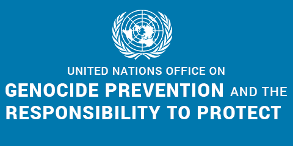

Responsibility to Protect under the UN's defintion
-UN Office against Genocide's logo
The responsibility to protect embodies a political commitment to end the worst forms of violence and persecution. It seeks to narrow the gap between Member States’ pre-existing obligations under international humanitarian and human rights law and the reality faced by populations at risk of genocide, war crimes, ethnic cleansing and crimes against humanity.
Responsibility to protect in pratice during the Bosnian Genocide
Although the war had started in 1992 and NATO’s initial involvement in the war was very ineffectual. Early intervention consisted mainly of delivering food to those in need as well as establishing no fly zones and checking incoming shipping cargo.1992 generally marks the beginning of the Muslim genocide in bosnia. For the next couple of years majority muslim towns would continue to be ravaged by serb forces including notably the long four year seige of the city of Sarajevo, where the people of the muslim majority city were left to defend themselves from a surrounding and overpowering Serbian army. Between 1992 and 1996 over approximately 13 000 men, women and children were declared dead or missing.
Despite the clear need for help during this ongoing crisis and war, NATO only decided to deploy forces a select few times and too late. The first was in 1994, which was NATO’s first ever use of combat and it was an attack on serb jets flying over a no fly zone. NATO only then began to intervene with airstrikes against serb occupied areas in an effort to weaken the serb military. The war and carnage had been going on for two years at this point. It was only after the massacre at Srebrenica that the global intervention really began to take foot.
6 nations met to discuss what ways that efforts could be increased in the war and airstrikes were just decided to be implemented more. These frequent airstrikes on Serb forces started in 1995 and lasted a couple weeks until the Serbs conceded to negotiate at the Dayton accord where a peace treaty was finally signed.
This shows the world’s difficulty to intervene in issues even though there were clear human rights violations and genocides taking place during this time. NATO’s intervention is an example of the failure of responsibility to protect. Even though there was a country with innocent people in need there was barely any intervention until there was an event serious enough that you could no longer look away. This event was the massacre at Srebrenica. There was a clear responsibility to protect before this but there was only intervention after and it was too late for all the innocent civilians who had died throughout the war. There was a clear vendetta to rid bosnia of its muslim population and the global intervention was slow eneugh that thousands died as a result. This is a horrible example of the failure of the failure of the global responsibility to protect.